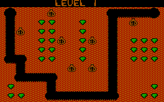
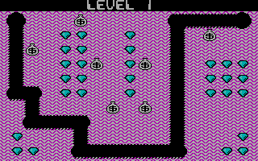
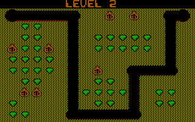
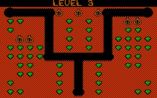
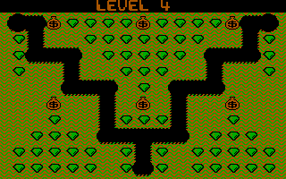
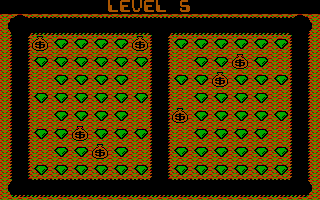
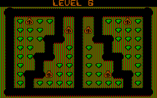
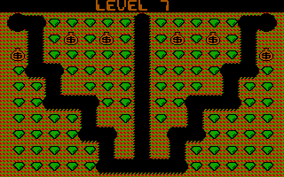
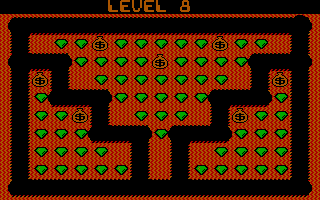
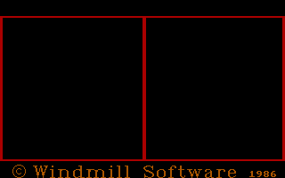

Copyright (c) 1983
Windmill Software Inc.
DIGGER is available for all PC,
XT, AT and compatibles.
Thank You for your support.
How to play
You drive the Digger Mobile through an underground mine. Tunnel through the dirt, scoop up every emerald, and keep away from the Nobbins and Hobbins that pour out of the top-right corner. Gold sacks sit in the dirt above you: dig out from under one and it wobbles, then falls. It squashes anything below it, and if it falls more than one row it bursts open into gold you can collect.
You clear a round by collecting all the emeralds or by getting rid of every monster in the round. Once the last monster has come out, a cherry appears where they emerged. Eat it and the screen changes colour, the monsters run away from you, and for a short time you can eat them for big points.
Keys
| ← → ↑ ↓ | Drive the Digger (the numeric keypad works too) |
| F1 or Z / Enter | Throw a fireball in the direction you face |
| Space | Pause; any key resumes |
| F7 | Background music on/off |
| F9 | All sound on/off |
| Esc | On the title screen: toggle 1 or 2 players |
| any other key | On the title screen: start the game |
Your browser may grab F1 for its own help page, so Z and Enter also fire. The page only takes the keys while the game screen is mostly in view, so you can still scroll down and read.
Scoring
| Nobbin or Hobbin (fireball or falling gold) | 250 |
| Emerald | 25 |
| Gold from a burst sack | 500 |
| Eight emeralds in a row | +250 |
| Cherry | 1000 |
| Monsters eaten in bonus mode | 200, 400, 800… |
You earn an extra life every 20,000 points, up to five lives. High scores are saved in your browser, where the original wrote them to its floppy disk.
Tips from the original instructions
“During normal play, you destroy Nobbins & Hobbins with your fireball or by pushing the gold sacks down a mine shaft. Don't forget to scoop up the gold when the sack breaks. After all the Nobbins & Hobbins have emerged, cherries appear. Scooping up the cherries begins a bonus round.”
— the in-game instructions screen from the shareware build (TZ.C)
- You can push a gold sack sideways by driving into it, and push a whole row of sacks along together.
- A sack falling down a shaft takes out every monster in its path, at 250 each.
- The Digger's red cab disappears after you throw a fireball. When it comes back, the fireball has recharged.
- Monsters that keep getting blocked lose patience and become Hobbins, which dig straight towards you.
- Eating emeralds one after another, without a pause, plays a rising scale. The eighth note pays the 250 bonus.
How DIGGER works
To port the game I had to read every line of the original, so here is what I found. Everything below
comes from the 1983 sources (TA.C–TZ.C, GRAPHLIB.ASM,
KEYBOARD.ASM, the .SPR sprite files and the .CHR font).
The sprites, maps and screenshots are drawn from the original data by this port's own engine.
- Program structure
- The CGA display
- Sprites
- The sprite engine and collisions
- The playfield grid
- Level structure
- How tunnels are remembered
- Nobbins and Hobbins: the enemy AI
- Difficulty table
- Gold sacks
- The Digger and its fireball
- Bonus mode
- Scores, lives and two players
- Keeping a constant speed
- Two voices from one beeper
- The title screen
- Quirks and curiosities
- About this port
1. Program structure
The game is written in Lattice C with a small library of 8088 assembler for graphics, keyboard and copy protection. Each source file is one "task", identified by a letter:
| File | Task |
|---|---|
TZ.C | Main program: title screen and demo, game loop, levels, players, pause |
TA.C | Nobbins and Hobbins: spawning, AI, dying |
TB.C | Gold sacks: loosening, wobbling, falling, pushing, bursting |
TC.C | The Digger: movement, death sequence, fireball, bonus cherry |
TD.C | Emeralds: placement and eating |
TE.C | Joystick/keyboard reading |
TF.C | Scores, extra lives, high-score table and initials entry |
TG.C | Background: dirt patterns and the tunnel bitmap |
TH.C | Sound: the timer interrupt, music and every sound effect |
TX.C | Data: the eight level maps and a 256-entry random table |
IMAGE.C, IMAGE_B.C | Animation: picking sprite frames for each object |
GRAPHLIB.ASM | The sprite engine (save-under, masking, collision detection) |
Each frame, the main loop calls task_c() (Digger), then task_a() (monsters), then
task_b() (sacks). It then waits out the rest of the frame and checks for pause and end of round.
Sound runs separately, inside a reprogrammed timer interrupt.
2. The CGA display
DIGGER runs in CGA mode 4: 320×200 pixels, 4 colours, 2 bits per pixel, four pixels per byte with the leftmost in the high bits.
Video memory is interlaced: even lines start at B800:0000 and odd lines at B800:2000,
80 bytes per line. Every routine in GRAPHLIB.ASM steps through those two banks by hand.
Palette 0: normal play
Palette 1: bonus mode
Bonus mode doesn't redraw anything. It writes one bit to the CGA colour-select register (port 3D9h) and the
whole mine instantly changes from green/red/brown to cyan/magenta/grey:


Text uses its own 39-glyph font (CHAR__*.CHR), 3 bytes (12 px) wide. A glyph is ANDed with
the colour repeated across the byte, so one bitmap can be drawn in any of the four colours:
3. Sprites
The 77 sprites were drawn in a home-made editor, SPGEN.BAS (GW-BASIC).
It writes each one out as a C header with a 32×32 picture in a comment, an image_ array, an
outln_ (mask) array and the width and height. In the editor, colour 4 means "transparent": it becomes
image 00 with outline 11, so the background shows through. Most actors are 4 bytes × 15 lines
(16×15 pixels).
The animation code in IMAGE.C cycles the three walking frames 0→1→2→1→0… by flipping an increment.
There is no frame timer: each call to draw_bug() or draw_man() advances one frame.
4. The sprite engine and collisions
GRAPHLIB.ASM manages 16 hardware-less sprites. Each one has an image, a mask, a save-under buffer,
a position and an "active" flag. Drawing a sprite works like this:
- Save the screen bytes underneath into the sprite's background buffer.
- AND the mask into the screen, then OR the image on top.
When a sprite moves, the engine first works out every active sprite that overlaps the old or new position. It repeats this recursively, so a chain of touching sprites is all collected. It erases them all in reverse order, restoring their saved backgrounds, then redraws them in a fixed priority order, so overlapping sprites never leave garbage behind. The draw order is:
table[] = { 14, 13, 7, 6, 5, 4, 3, 2, 1, 12, 11, 10, 9, 8, 15, 0 }
cherry, monster 13, sacks 7..1, monsters 12..8, fireball, and the Digger (0) last, on top
The sprite slots are fixed for the whole game:
| Slot | Object | Collision bit |
|---|---|---|
| 0 | Digger | 0x0001 |
| 1–7 | Gold sacks | 0x00FE |
| 8–13 | Nobbins / Hobbins (max 6) | 0x3F00 |
| 14 | Bonus cherry | 0x4000 |
| 15 | Fireball | 0x8000 |
sp_move() returns a 16-bit mask of which other sprites the moved sprite now overlaps.
The game logic uses nothing else to decide what hit what. For example, in TA.C:
if(bug[bug_num][BUG_TYPE]==NORMAL && (colision & 0x3f00) && get_m_ststus() ) bug[bug_num][BUG_STUCK]++;
Collisions are bounding boxes only, which is why the fireball and monsters can seem to hit from a pixel or two away. There's one subtle detail: at x+320/y−2 a sprite lands on the same video memory as x/y (the next interlaced line starts 80 bytes later). So the engine also tests those "wrapped" positions, which keeps sprites near the right-hand edge erasing correctly.
5. The playfield grid
The mine is a 15 × 10 grid of cells, each 20 pixels wide and 18 high, with its top-left at (12, 18). The top 18 pixel rows hold the scores and lives.
- The Digger and the monsters move 4 px horizontally or 3 px vertically per step. That is 5 steps to cross a column and 6 to cross a row.
- They can only turn when they are exactly on a cell boundary. If you press a perpendicular arrow between cells, the Digger keeps going until it reaches the next boundary and then turns. This "pre-turn" makes the controls feel forgiving.
- The Digger always starts at cell (7, 9), bottom centre. Monsters always come out at (14, 0), top right.
6. Level structure
There are eight hand-made screens. Each is a 10-row × 15-column array of characters in TX.C:
| Char | Meaning |
|---|---|
S | Solid open cell (the tunnel occupies the whole cell) |
H | Horizontal tunnel through the cell |
V | Vertical tunnel through the cell |
C | Emerald (C for "coin", the name used throughout the code) |
B | Gold sack ("money bag") |
| space | Untouched dirt |
The level number keeps going up, but the screen shown follows this function from TZ.C:
get_screen()
{
int temp;
temp=get_level();
if(temp>8)
temp=(temp%4)+5; /* rotate through the last 4 screens */
return(temp);
}
So the sequence is 1 2 3 4 5 6 7 8, then 6 7 8 5 6 7 8 5 … forever. Note the 9th screen is screen 6, not 5.
Difficulty is min(level, 10), so from level 10 on, only the screens change. Each screen also chooses
one of eight dirt patterns.







Each player keeps their own copy of the screen state: tunnels, remaining emeralds and sack positions. In a two-player game the mine switches when the active player loses a life.
7. How tunnels are remembered
Pixels on screen are not enough for the logic to know where it can go. TG.C keeps one 16-bit word per cell
recording which parts of that cell have been eaten. The Digger erases dirt with small "bite" sprites (rt,
lt, up, dn), and every bite also sets a bit:
| bit | 15 | 14 | 13 | 12 | 11 | 10 | 9 | 8 | 7 | 6 | 5 | 4 | 3 | 2 | 1 | 0 |
|---|---|---|---|---|---|---|---|---|---|---|---|---|---|---|---|---|
| use | whole | vertical bites, top → bottom | horizontal bites, left → right | |||||||||||||
Monsters use these words to decide which directions are open (back_check()). A sack checks the cell beneath it
against the mask 0xFDF to decide whether there's a hole below. The fireball doesn't use them at all: it reads
video memory directly and explodes on the first non-black pixel in front of it.
8. Nobbins and Hobbins: the enemy AI
Nobbins (the round ones) can only travel through existing tunnels. Hobbins (the ones with the big mouth) dig their own tunnels, eat emeralds and break open gold sacks. They are the same monster in two states, and every monster comes out as a Nobbin.
Choosing a direction
A monster only thinks when it is exactly on a cell boundary. Then, in TA.C:
- It ranks the four directions by the Digger's position. The axis with the bigger distance comes first, then the other axis towards the Digger, then the other axis away, and last the main axis away.
- In bonus mode the order is reversed, so the monsters flee.
- Going straight back the way it came is moved to last place, so a Nobbin won't dither.
- On difficulties 1–5 there's a small chance (
rnd(5+d)==1) that the 1st and 3rd choices are swapped. This is the only randomness in the steering, and it disappears from difficulty 6. - It takes the first direction that
back_check()says is open tunnel. - A Hobbin ignores all that and always takes choice 1. It just digs through.
Changing direction costs one frame's pause, which is part of why the monsters look hesitant at corners.
Becoming a Hobbin, and back
Each monster has a STUCK counter. For a Nobbin it goes up when it bumps into another monster or is blocked.
When it passes 10 − d the Nobbin turns into a Hobbin. While a Hobbin digs, the same counter keeps rising,
and once it passes 30 + 2d the Hobbin calms down and turns back into a Nobbin.
So on early levels Hobbins appear rarely and don't last long. On level 10 a monster that is blocked once turns into a Hobbin.
Speed
Each frame a Nobbin has a 1 in (16 − d) chance of an extra step, so they speed up on later levels.
Monsters don't get faster in any other way.
Spawning
A round has 5 + d monsters in total, never more than 3, 4 or 5 on screen at once, with a delay of
45 − 2d frames between arrivals. New monsters stop arriving while the Digger is dead or the bonus is running.
If a monster is under a falling sack in the same column and heading up into it, it turns round (save_bugs())
rather than walking into the sack.
9. Difficulty table
Every tuning value in the game is a simple formula of the difficulty d = min(level, 10).
"Frames" are passes of the main loop, about 15 per second on the original PC.
| Level | Monsters per round | Max on screen | Spawn gap (frames) | Nobbin→Hobbin after | Hobbin→Nobbin after | Extra step chance | Random swap | Fireball recharge | Bonus length | Gold lasts |
|---|
10. Gold sacks
- Loose: when the cell under a sack has been dug into (the background word isn't all of
0xFDF), the sack wobbles left and right for 15 frames (DROP_WAIT). It won't come loose while the Digger himself is in the cell below (get_man_block()), so it's the moment you drive away that sets it off. - Falling: it falls 6 px per frame, eating its own tunnel (blanks
bf/bd). Anything it lands on dies: monsters score 250 each, and the Digger is flattened. - Landing: a sack that fell only one row just sits down again. A sack that fell further bursts in three frames into a pile of gold.
- Gold: worth 500 to the Digger. Hobbins can eat it too. It vanishes after
150 − 10dframes, or almost at once if there's tunnel underneath it.
Driving into a sack from the side pushes it one step at a time. A pushed sack pushes the next one, and a sack pushed over a hole falls. Falling sacks also dig a hole above where they land, so the monsters can follow the new route.
11. The Digger and its fireball
The fireball (F1) leaves the front of the Digger and travels 8 px per frame horizontally or 7 px vertically.
It moves through tunnels until the pixel in front of it isn't black. It kills the first monster it touches (250 points)
and explodes in three frames. After firing you wait 60 + 3d frames. While you wait, the Digger is drawn
with the "no cab" sprites, which is how the game shows you're unarmed without a status bar.
When the Digger dies, the game plays a short sequence:
- Caught by a monster: the Digger flips into the overturned truck (
f9), bounces up and down (offsets −3, −5, −6, −6, −5, −3, 0 pixels), and then a gravestone grows out of it (f5→f1, two frames each). - Hit by a sack: the overturned truck rides down underneath the sack until the sack stops, then the gravestone appears.
- The grave stays on screen for 60 frames with music on (to let the tune finish), or 10 with it off.
12. Bonus mode
- When every monster for the round has appeared, the cherry (
z1) appears at the spawn point. There's one per round. - Eating it scores 1000 and switches the palette. Bonus mode lasts
250 − 20dframes, and the screen flashes between palettes for the first 20 frames and the last 20. - Monsters flee (the reversed direction order). Each one you touch scores 200, then 400, 800, 1600…, doubling each time.
- Every monster eaten during bonus mode adds one to the round's total, so another comes out later. Bonus mode can't end the round by running out of monsters.
13. Scores, lives and two players
Each player has a "next life at" counter that starts at 20,000 and goes up by 20,000 every time it's reached.
You can't have more than 5 lives; the four spare ones are shown with the s0/s1 sprites.
The top ten scores and initials were written straight to a sector on the floppy disk. Initials are typed letter by letter, with a time limit of about 15 seconds per letter.
14. Keeping a constant speed
The original has no frame timer. It counts how many sprites were drawn in the frame (inc_plot()
is called on every move) and pads with busy-waiting to make every frame cost about the same as 8 sprite moves:
if(plot_count<8) { /* delay for constant speed */
for(loop=(8-plot_count)*5; loop>0; loop--)
sleep(1);
}
if(plot_count>8) /* extra delay for very heavy movement times */
delay_bugs(plot_count-8);
A busy frame doesn't slow the game down. Instead, delay_bugs() makes some monsters skip their next move.
At start-up, find_speed() counts how many loop iterations fit between two clock ticks. It uses the result to scale
the pulse widths in the music (time_mul) so the music sounds the same on faster CPUs. The game delay itself is
not calibrated, so on an AT the game ran noticeably faster. This port uses a fixed frame of about 66 ms, which matches a
4.77 MHz PC. The Speed control above scales it.
15. Two voices from one beeper
The PC speaker can only be on or off, but DIGGER plays background music and sound effects at the same time,
with what sounds like volume envelopes. TH.C does it like this:
- Voice 1 (effects): channel 2 of the 8253 timer produces a square wave at
1193182 / periodHz directly into the speaker. - Voice 2 (music): the system timer (channel 0) is reprogrammed to interrupt at the music note's frequency. On each interrupt the handler pulses the speaker gate on for a short time and then off. The length of that pulse is the "volume": an attack/hold/decay envelope widens and narrows it on every note, which gives the music its soft, plucked character.
- The original BIOS timer handler is moved to
INT 60h. The new handler adds each period to a 16-bit counter and calls the old handler when it overflows, so the clock (and the floppy motor time-out) still work. It also calls the C functiontime(), which runs every effect at about 72.8 Hz. - Sound effects are small state machines (
chk_fall,chk_fire,chk_coin…) checked in a fixed order every tick. The last one that wants the speaker wins, and while any effect is playing, the music voice is muted.
Effects include the falling-sack whistle with its pitch rising as it drops, the wobble, the fireball, its explosion, the
monster-eaten blip, the extra-life chime, the gold pickup, and the rising emerald scale. Note periods are listed in NOTES.H.
This port emulates both voices sample by sample in a Web Audio ScriptProcessorNode. It produces the timer-2 square wave
and the interrupt-driven pulse train with the original's periods and pulse widths, then applies a light low-pass filter so it
sounds like a small speaker rather than a raw digital square.
16. The title screen

TITLE.C: 2,332 bytes that expand to the full 16,384 bytes of video memory.The bitmap is compressed with a simple run-length code: any byte is copied as is, except 0xFE, which is followed
by a count and a value (a count of 0 means 256). It is decoded straight into CGA memory, interlace and all.
The game then draws the parade of characters with their names, using the normal sprite engine
(Nobbin, Hobbin, Digger, Gold, Emerald, Bonus) on top. On the first player-select screen,
Esc toggles between one and two players.
One curiosity: the bitmap says © 1986 while the C sources and the start-up credits say 1983.
17. Quirks and curiosities
- Eight-character names. Lattice C only looked at the first 8 characters of an identifier.
The code calls
rst_scores()but definesrst_score(), and calls the misspelledget_m_ststus()next toget_m_status(). Both linked because the names were truncated. - Unequal extra lives. Player 1's extra life is checked with
>=but player 2's with>. So player 2 needs one more point than player 1 to earn a life. Scores are always multiples of 25, so in practice it never mattered. The port keeps it. - The screen cycle. After level 8,
(level % 4) + 5gives 6, 7, 8, 5. Level 9 is screen 6, not 5. - A loop counter reused. After a round ends, a "let the sacks finish falling" loop shares its
loopvariable with the speed-padding loop inside it. The padding counts it down to zero, so the intended 20 extra frames usually end after one. The port reproduces this. - A custom floppy. The disk was made by its own tools (
CREATE,NEWFORM.ASM). Track 0 holds a two-stage boot loader. Tracks 23–38 use non-standard 1024-byte sectors, which ordinary DOS copiers couldn't read. Track 39 uses normal 512-byte sectors, andPROTECT.ASM/CHKT39check it. The high-score table is read from and written to track 39, sector 1 (PROCHK.ASM). - Moving the picture. In the original, Ctrl+←/→ moved the picture on the monitor by changing the 6845 CRTC's horizontal sync position, for monitors that cut off an edge. Your browser doesn't need that.
- The shareware build. With
FREEDEMOdefined, the game stopped after level 2, didn't save high scores, and added three text screens of instructions, scoring and an order address. This port is the full game. - Hyperion support.
DIGGER.Hhas a build switch for "IBM or Hyperion options". The Hyperion was an early Canadian portable PC compatible.
18. About this port
The port is about 2,500 lines of dependency-free JavaScript and can be hosted on GitHub Pages as is. Function and variable names follow the C source, so the two can be read side by side.
js/assets.js: sprites, font, title bitmap, level maps, music data and random table, extracted from the original source files bytools/extract.js.js/cga.js: an emulated 16 KB CGA framebuffer and a line-by-line port of theGRAPHLIB.ASMsprite engine, including the collision bitmask.js/sound.js:TH.Ctogether with an emulated 8253 timer and PC speaker.js/game.js: tasks A–Z. The original's blocking busy-waits are rewritten asasync/await.
It differs from the original in a few places:
- The frame time is fixed rather than counted in CPU loops.
- The palette flicker while entering initials is shown as a blend of the two palettes.
- There's no joystick support.
- High scores are saved in
localStorage.